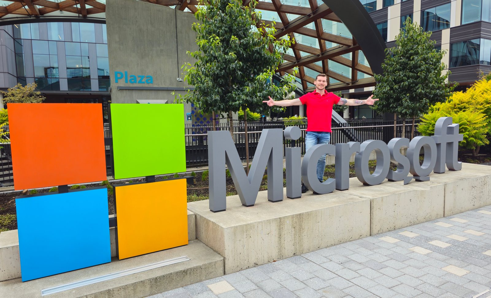
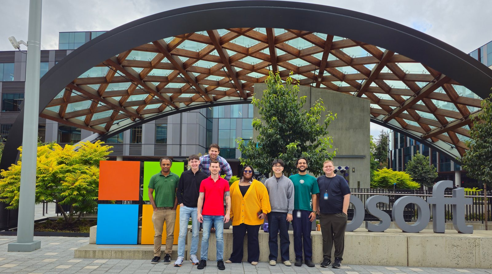
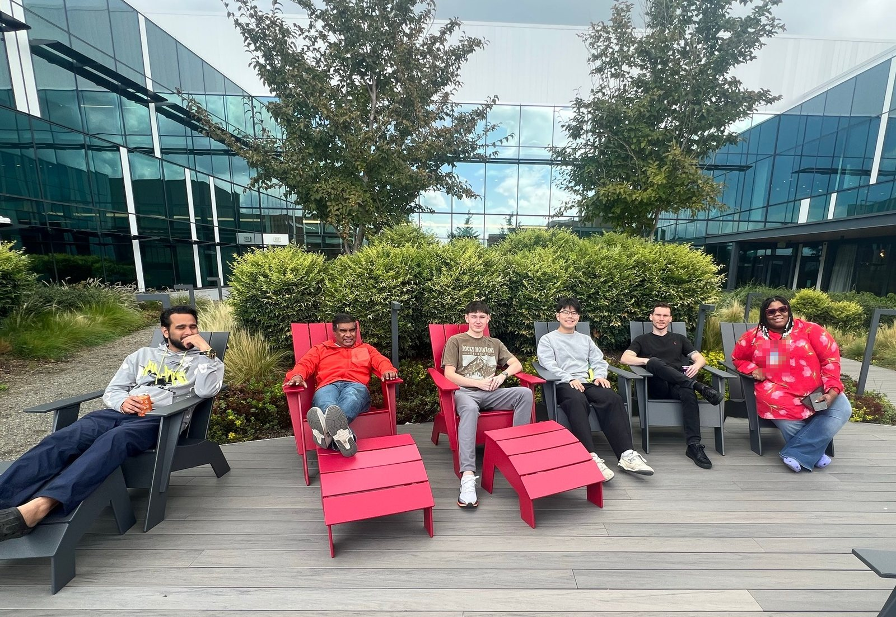
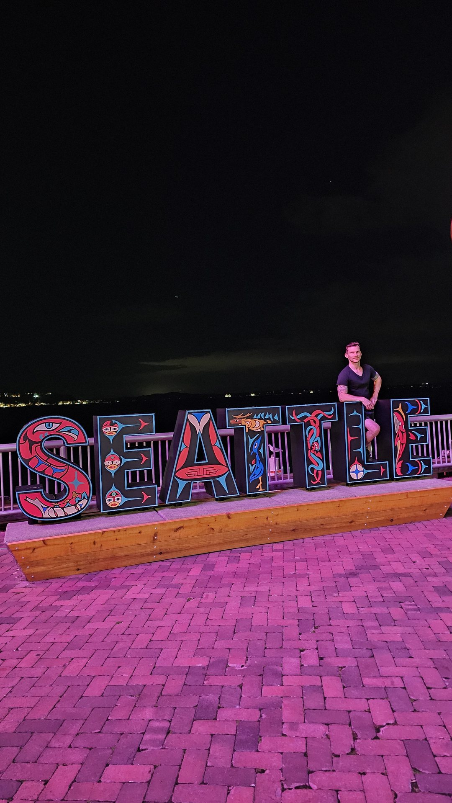

A Week in Redmond with Azure Storage Security
Face time with the team that protects one of the largest storage platforms on the planet, and a few days exploring the campus where it all gets built.

01 · Why Redmond
Putting faces to the work.
Last week I flew from Miami to Redmond, Washington to spend time in person with Microsoft's Azure Storage security team. A lot of security work happens across time zones in chat threads, tickets, and dashboards. Being in the same room for a week changes the conversation. You go deeper, faster, and you leave with a shared picture of where things need to go.
Azure Storage sits underneath a huge share of what runs in the cloud, so the stakes are high. Microsoft's public guidance covers the fundamentals, like encryption at rest by default and a detailed set of security recommendations for Blob storage. Our time together was about what comes next.

02 · What We Worked On
AI, automation, and the threats that come with them.
Without getting into anything internal, the discussions ran along four tracks:
AI's impact on cloud security
How AI changes the security picture for infrastructure at massive scale, as both a new attack surface and a powerful defensive tool.
Defending AI and automation
How to deploy AI agents and automation safely: with least privilege, strong guardrails, and humans in the loop where it counts.
Emerging threats
What attackers are trying now, and how quickly defenses need to adapt when the tools on both sides keep getting faster.
Security metrics
How we measure and track risk across cloud environments so progress is visible, comparable, and actionable.
That lines up with the direction of Microsoft's Secure Future Initiative, and it's close to my own day-to-day: building AI-driven tooling that turns security work at scale into something automated, measurable, and fast.

03 · Exploring Campus
Timber, glass, and green space.
Between sessions I explored the Redmond campus. The newer parts feel more like a well-designed park than a corporate office park: a huge timber-and-glass canopy over the plaza, courtyards full of plants, and Adirondack chairs where teams can take a meeting outside. It's the kind of space that makes it easy to step away from a whiteboard and keep the conversation going.
I also got into Seattle on my first night to see the waterfront before the work week kicked off.

04 · Takeaway
Security still runs on people.
AI and automation are changing how we defend cloud infrastructure, and this week made that concrete. The biggest lesson, though, was simple: the best security outcomes still come from people who trust each other and work toward the same goal. I came home with a clearer roadmap, new ideas to build, and a team I'm glad to work alongside.
Written by Bryan Totty · Sep 2026
More posts →Views are my own and do not represent Microsoft.